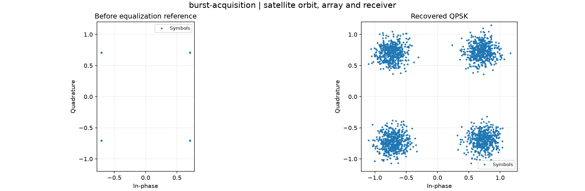

Reproducible satellite orbit, array and receiver. Units and field components are printed on the scientific axes. peak d-q quantities use exp(+i omega t); terminal currents point into the protected line.
Sealed numeric archive | Summary CSV | Physical parameters | Run request | Source and environment

| ber | 0.0 |
|---|---|
| bit_errors | 0 |
| bits | 4096 |
| estimated_offset_hz | 1234.4258110816415 |
| evm_rms | 0.18131551333153625 |
| residual_offset_hz | 0.07418891835845898 |
These are simulations, not hardware measurements. Network-model, measurement, timing and statistical uncertainty require distinct convergence checks. Singular or unilluminated data use explicit masks.
Source revision: 9a21824463bee585d4ba8354070cc9108436346d.
Dirty checkout: False.
Configuration SHA-256: 2e1b00b0c43afb83520e39e846aed534aa68602831e29ddd9651a500dd39503c.
Replay preserves original source and parameter provenance. SHA-256 manifests detect changed bytes; they are unsigned integrity records, not certificates of physical validity.